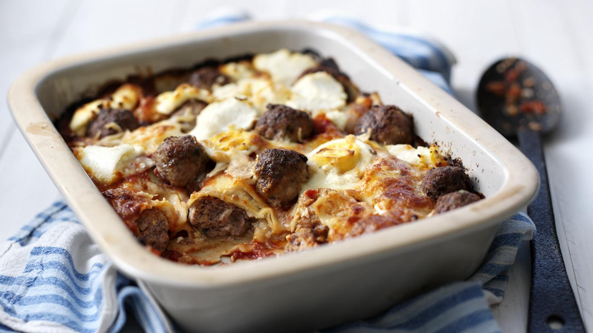

Lasagna recipe

Description
Homemade meatballs in a rich, creamy sauce make this lasagne recipe comfort-food heaven.
Ingredients
- 2 medium onions, finely chopped
- 125ml/4½fl oz olive oil
- 4 x 400g/14oz cans whole plum tomatoes
- salt and freshly ground black pepper
- large handful fresh basil leaves, roughly torn
Steps
- For the tomato sauce, heat the olive oil in a large pan, add the onions and fry gently until softened.
- Add the tomatoes, season with salt and freshly ground black pepper and stir in the basil. Reduce the heat and simmer gently for about 25 minutes, or until the tomatoes have broken down and the sauce is reduced. Set aside.
- For the meatballs, place all the meatball ingredients, except the oil and flour, into a bowl and mix well. Using your hands, shape the mixture into walnut-sized balls.
Home